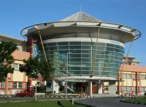
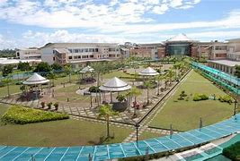
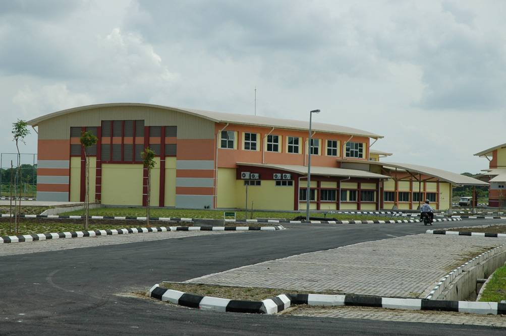

Mukah (muːkəh), formerly known as Muka is a coastal town which serves as the capital and the administrative center of the Mukah Division since 1 March 2002.
The district also covers an area of 2,536 square kilometres (979 sq mi) with a population about 49,900 in the Mukah town[4] and 18,800 in the Dalat administrative town of Dalat District
It is located on the Borneo island, by the South China Sea, about 3 hours by road from the city of Sibu. Mukah is also accessible by air by MASwings from Kuching and Miri. The duration of both flights is about one hour. There are also speed boats connecting the town of Dalat (about 30 kilometres from Mukah) to Sibu. The speed boat trip takes approximately 2 hours
  